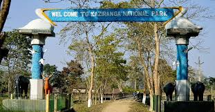

Kaziranga National Park

Kaziranga National Park is a national park in the Golaghat and Nagaon districts of the state of Assam, India. The sanctuary, which hosts two-thirds of the world's great one-horned rhinoceroses, is a World Heritage Site.[1] According to the census held in March 2015, which was jointly conducted by the Forest Department of the Government of Assam and some recognized wildlife NGOs, the rhino population in Kaziranga National Park is 2,401. It comprises 1,651 adult rhinos (663 male, 802 are females, 186 unsexed);

HOW TO REACH ?
Nearest Airport: guvahati
Nearest Railway Station:guvahati
Nearest Bus Stand:guvahati